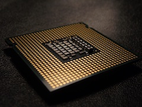
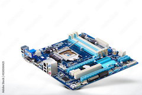
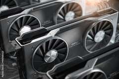

Why should I build a computer?
2020 was a hectic year for everyone because of the pandemic. It kept everyone home and workplaces began to adjust so their employees can continue working in their home office, causing a scramble for any device that could run windows and zoom. Building a computer began to be much less niche than it already is as a result of this scramble. Being able to run heavy programs and render large videos at home demanded that the dedicated computers in the offices must be at home so the workers/artists can continue their work uninterrupted.
What is there to learn from building a computer?
What did I learn by building computers?
PC Parts Know-How
This page will help briefly explain each part of a computer to help you get an idea of what you're looking for in a build.
Central Processing Unit

The processor, more commonly known as the CPU, is the brain of the computer. It is filled with millions of transitors that are nearly the size of the atoms that are all wired together in complex designs drawn on silicon. These designs are used and made by big manufacturers like AMD or Intel.
Motherboard

While the CPU is the brain of the computer, the motherboard is the body the brain sits on along with the rest of the components. This piece allows each component to interact with each other to ensure the entire PC functions properly, it's also important that each part connected to the motherboard is compatible so the system can run.
Graphics Processing Unit

The graphics processing unit is famously known as the GPU. While it can come integrated with a CPU, it can also come with a seperate dedicated board always on a seperate board connected by a PCI-E slot. The main difference between the two is the workload and computing power required by the user when working or gaming.
Integrated or Dedicated?
If you are building your own computer, you will surely use a dedicated GPU unless you are in a tight budget or intend to use it for *only* surfing the web. This is because the heat generated by rendering video, playing games, or mining cryptocurrency requires its own cooling methods and power to ensure maximum efficency to the user without frying the board itself.
RAM
Storage
As of 2022, there are 3 dominate forms that have a hold on the computer market and all have varying pros/cons for the buyer to chose from:
Hard Disk Drive
The oldest of the 3, it also provides the most GB per $ to the user. Many large designs have came and went in the competitive market, they currently get thinner by the year, however still having the clunky look they all share. They function with spinning disks that are read by an arm similar to a turntable, with the head of the arm doing both read/write functions by moving up and down the disk. HDDs are the most susceptible to physical damage since the rotating disks have many points of failure, but data stored in these disks would not be lost unless those are damaged as well.
Solid State Drive
The direct competitor to the HDD, the SSD is as thinner but pricier alternative that uses their own integrated chips to store data in. The biggest benefit from this is the read/write time that drastically improves performance in loading programs or copying large amounts of data. Other benefits such as lifespan, potential damage risks, are much better on this side of the field if the budget allows it.
Non-Volatile Memory Express
While NVMe is technically a form of an SSD, the interface used to access this data completely gaps the read/write speed of a normal SSD. This method allows users to move large amounts of data almost instantly with speeds up to 2 GB/s (A normal SSD reaches up to 600 MB/s!). The crazy high speed and size of a stick of gum comes with a high price, but it is currently the modern way to store data in a expensive build.
Compatibility
This page will go over the compatibility component in building a new computer. This should help give you a piece of mind when buying all the parts and not running into a POST-code on your motherboard because of an incompatible piece of hardware.
CPU and Motherboard Compatibility
The most important pair on a computer is the CPU+Motherboard, as motherboard sockets can only physically allow certain CPUs to be placed. Incompatible parts can damage the motherboards socket AND the CPU pins, which results in a very expensive replacement of the two. Websites contain data of the many sockets available on the market and can warn you if your part is not compatible with the other. Be sure to TRIPLE check this as this can unnecessarily ruin or delay your build.
Case and Motherboard Compatibility
While a bad CPU+Motherboard combo can ruin a build, having a case too small for your motherboard can be just as unnecessary. Luckily motherboards follow common form factors that cases label themselves to. The list goes as: ATX, Micro-ATX, and Mini-ITX.
CPU Cooling
The CPU can be cooled in many ways, some more efficient than others... But they're usually cooled by one of two methods: Air cooled and Water cooled. These two methods come in many different forms and can actually get in the way of important hardware, commonly RAM.
Ok... How do I actually build one?
You finally got all the parts in... know it's time to crack open the boxes and get to work! But how should those RAM sticks go in again?
Inserting your CPU into the motherboard socket
Every new motherboard has a plastic cover over the socket so no dust can fall in, causing any unwanted damage to both the motherboard and CPU.
Installing the cooling system
Once the CPU is in the motherboard, thermal paste should be applied on the plate of the cpu, with little over a pea sized drop being used. The cooling manufacturer will typically include pre-applied thermal paste on the copper plate or have a syringe of their own for you to use. Once you sit the cooling plate over the CPU, the paste should spread on its own. *NOTE* Refer to your motherboards or the cooling devices manual on instructions for mounting the cooling system to your motherboard!
Air Cooler
Once you have installed the heat-sink, the manufacturers manual shows how the CPU fan is mounted. Plug the CPU fan into the CPU_FAN header onto your motherboard. This will allow the system to control fan speeds according to the CPUs temperature.
All-In-One Water Cooler
More commonly written as an AIO cooler, the radiator must be mounted together with the fan on the case. Ensure that the radiator is mounted on the top or the rear side of the case with the fans pushing air out to get rid of the heat created by the computer.
Placing the motherboard inside the case
Important Note!
Before you put the motherboard near the case, ensure that the screw holes are lined up and install the stand-off screws. This is extremely important as you can risk shorting the entire board if any contact is made, with added risk of damaging all components installed on the board as well.